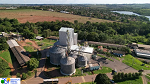

Notícias sobre Produtos Orgânicos
Os produtos orgânicos, na linguagem do dia a dia, se referem àqueles produzidos sem o uso de adubos químicos e agrotóxicos. Porém, todos os alimentos contêm compostos orgânicos. "Quando você ouve as palavras “Química Orgânica” o que vem à sua mente? A maioria das pessoas costuma pensar em produtos e principalmente alimentos ditos “naturais”, que são então chamados de “orgânicos”."

"Quando se fala em alimentação orgânica, a ideia que nos vem à mente é de frutas e verduras saudáveis, com aparência e sabor naturais. Mas se todo alimento é orgânico, por que esta denominação é usada somente para aqueles produzidos sem a adição de agrotóxicos? O nome surgiu da necessidade de diferenciar os produtos convencionais dos produzidos sem a adição de adubos químicos e conservantes."

Agricultores indígenas vendem feijões orgânicos cultivados em montanhas de RR na 41ª Expoferr Feijões e outros produtos são cultivados a 1.400 metros de altitude, em Uiramutã. Último dia do evento acontece no Parque de Exposição Dandãezinho, localizado no Monte Cristo, zona Rural de Boa Vista.
Gisely Coité começou sua jornada empreendedora por uma questão pessoal. Sua filha com apenas 06 meses de vida, foi recomendada pelo médico a se alimentar com produtos orgânicos. Na busca por esse tipo de alimento, ela encontrou dificuldades. "Não tinha variedades, ofertas e eu e meu marido começamos a plantar no quintal da nossa casa", lembra.

Korin: Alimentos Sustentáveis e Orgânicos, de Ipeúna para todo o Brasil Patrocinadora do Festival Gastronômico Delícias da Serra do Itaqueri, a empresa foi essencial para que Ipeúna se tornasse a Capital da Agricultura Natura
Agricultor mineiro é o maior produtor de orgânicos do Brasil É na cidade de Camanducaia, Minas Gerais, que o agricultor escolheu para plantar batatas e outros tubérculos orgânicos.